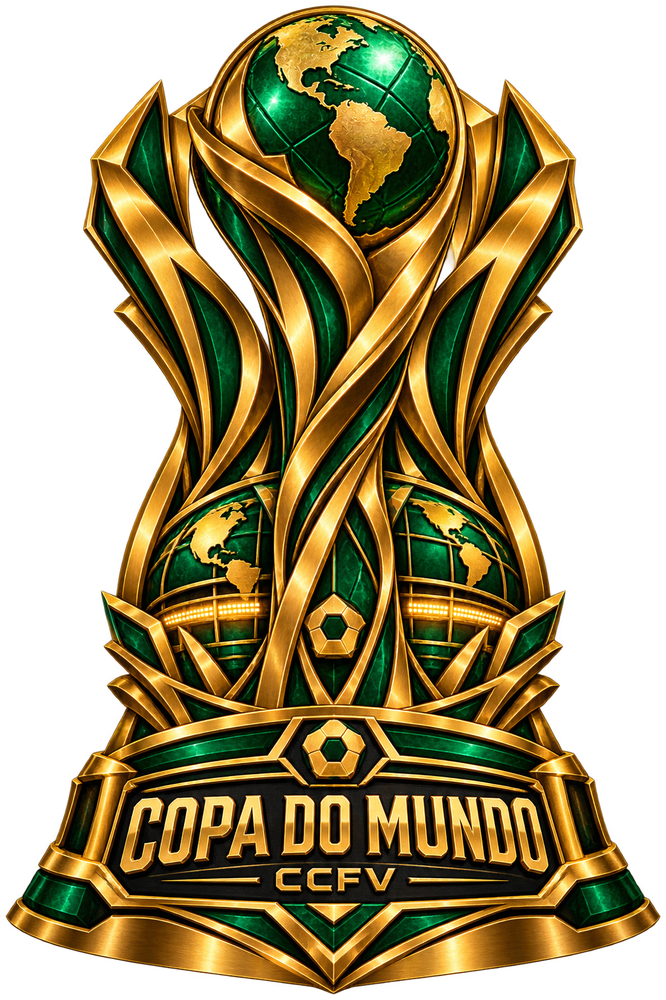

CCFV // COMPETIÇÃO GLOBALA COPA DO
A COPA DO
MUNDO.
32 seleções. Oito grupos. Uma corrida até a taça máxima do universo CCFV.

CCFV // GRUPOSO CAMINHO
O CAMINHO
ATÉ A TAÇA.
CCFV // PARTIDASMATCH
32 seleções. Oito grupos. Uma corrida até a taça máxima do universo CCFV.
